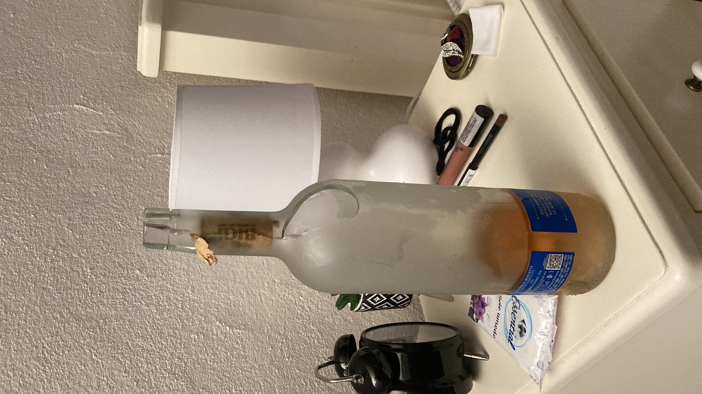

12 mai 2024
Sighișoara
💜 Te iubesc pentru ca m-ai accepta și stângaci, într-o lume plină de dreptaci 💜
“Măăi Adiii”. Când aud asta inima mi se topește. Ma cerți in timp ce îmi arăți ca ma iubești. Am fost de atâtea ori stângaci, si totuși fiecare moment de genul
te-a apropiat din ce in ce mai mult de mine. Si cred ca este o explicație foarte simplă pentru asta. Suntem oameni. Cu bune, cu rele, suntem oameni care vor sa
iubească si sa fie iubiți. Ne împlinim reciproc, Ioana. Ne dam viața si crestem împreună. Cum aș putea spune vreodată ca sunt neîmplinit in viața?